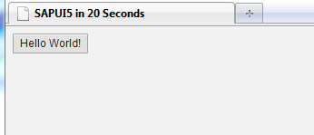

SAPUI5 Hello World
This page explains how to create and run a simple SAPUI5 application from scratch within twenty seconds (with some practice… the current record is 16 seconds).
If you are interested in exactly doing this without reading too much, you can jump right down to the next chapter on this page.
Explanation
As SAPUI5 is a client-side web UI library (i.e.: runs in the browser), a SAPUI5 application is typically an HTML page (plus potentially many more files).
UI5 is implemented in JavaScript, so for loading UI5, its bootstrap just needs to be included with a <script> tag. The last two attributes select the visual design to apply initially (other choices would be "sap_hcb" or "sap_platinum") and the UI control library/libraries to use ("sap.ui.dev" would be another one). In your scenario you need to make sure the URL points to a SAPUI5 installation.
<script id="sap-ui-bootstrap" src="resources/sap-ui-core.js" data-sap-ui-theme="sap_goldreflection" data-sap-ui-libs="sap.ui.commons"></script>
SAPUI5 UI elements are created and modified programmatically:
// create the button instance var myButton = new sap.ui.commons.Button("btn"); // set properties, e.g. the text (there is also a shorter way of setting several properties) myButton.setText("Hello World!"); // attach an action to the button's "press" event (use jQuery to fade out the button) myButton.attachPress(function(){$("#btn").fadeOut()});
There is also a shorthand notation based on JSON for setting multiple properties; you could also write:
var myButton = new sap.ui.commons.Button({text:"Hello World!",tooltip:"Hello Tooltip!"});
Finally you need to tell UI5 where the UI control should be placed. You can just give the ID of an element in the page to do so:
// place the button into the HTML element defined below myButton.placeAt("uiArea");
This element must exist somewhere in the HTML page, so you need to put the following code to the desired place within the <body>:
<div id="uiArea"></div>
(As of now you can only put one UI5 control into a parent; for adding more UI5 controls you need to either define more parents or to use a UI5 layout control which can arrange many children.)
An alternative way to create and initialize the control in a more jQuery-style manner is also available:
$(function(){ $("#uiArea").sapui("Button", "btn", { text:"Hello World!", press:function(){$("#btn").fadeOut();} }); });
As a minor detail, the <body> should have a certain CSS class, so the page background and some other styles are properly set:
<body class="sapUiBody">
And two meta-Tags at the beginning of the <head>: the first to ensure that Internet Explorer 8+ uses its most-standards-compliant rendering mode. And the second to let all browsers treat the file as UTF-8 encoded (assuming that you use this encoding when editing/saving the file):
<meta http-equiv="X-UA-Compatible" content="IE=edge" /> <meta http-equiv="Content-Type" content="text/html;charset=UTF-8"/>
And how to do it in 20 seconds?
Assumption for these instructions to work exactly as described: you have a Windows Computer (other OS will work similarly), Internet Explorer 9+ (having the security option: access data across domains turned on for the proper zone), FireFox 13+, Safari 5+ or Chrome 20+ and you know where you can refer to SAPUI5 on some server.
Important: the URL in the script tag is pre-filled as " https://sapui5.hana.ondemand.com/resources/sap-ui-core.js" (which was at least available at the time of writing this document). Test this URL first: if it does not work, you need to find a different installation or deploy SAPUI5 on your own server.
Also note that the version of SAPUI5 deployed on https://sapui5.hana.ondemand.com/ may be updated with a delay of some days or weeks after a new release of SAPUI5, even though we try to keep them in sync. This example will work nevertheless.
(In Internet Explorer you might have to accept a security question or even enable the security option: access data across domains turned on for the proper zone.)
- Right-click your desktop, select "New" → "Text Document"
- Name the new file e.g. "ui5.html" and accept the extension change warning
- Right-click the new file and select "Edit" (make sure it opens in Notepad or so, NOT in MS Word!)
- Copy&Paste the below HTML code and save the file (e.g. press Ctrl-S) (remember: the SAPUI5 URL must be adapted)
- Drag the file to this browser window
- End. Nothing else. That was it.
<!DOCTYPE html> <html> <head> <meta http-equiv="X-UA-Compatible" content="IE=edge" /> <meta http-equiv="Content-Type" content="text/html;charset=UTF-8"/> <title>SAPUI5 in 20 Seconds</title> <!-- 1.) Load SAPUI5 (from a remote server), select theme and control library --> <script id="sap-ui-bootstrap" src="https://sapui5.hana.ondemand.com/resources/sap-ui-core.js" data-sap-ui-theme="sap_goldreflection" data-sap-ui-libs="sap.ui.commons"></script> <!-- 2.) Create a UI5 button and place it onto the page --> <script> // create the button instance var myButton = new sap.ui.commons.Button("btn"); // set properties, e.g. the text (there is also a shorter way of setting several properties) myButton.setText("Hello World!"); // attach an action to the button's "press" event (use jQuery to fade out the button) myButton.attachPress(function(){$("#btn").fadeOut()}); // place the button into the HTML element defined below myButton.placeAt("uiArea"); // an alternative, more jQuery-like notation for the same is: /* $(function(){ $("#uiArea").sapui("Button", "btn", { text:"Hello World!", press:function(){$("#btn").fadeOut();} }); }); */ </script> </head> <body class="sapUiBody"> <!-- This is where you place the UI5 button --> <div id="uiArea"></div> </body> </html>
Result
If you followed the steps above you should now see a button like this which fades out when clicked:

Next Steps
You could now…
- …add more buttons
- …let them do trickier things
- …use an different visual theme mentioned above, e.g. "sap_ux"
- … find out about further properties and events of button controls and use those
- … find out about further controls and add those